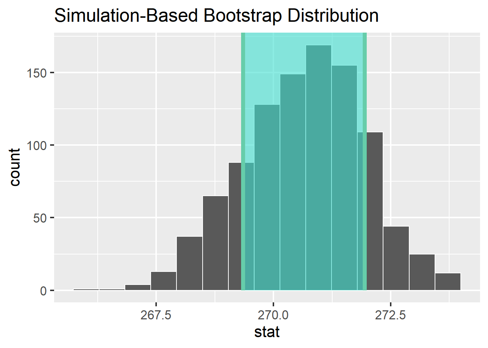
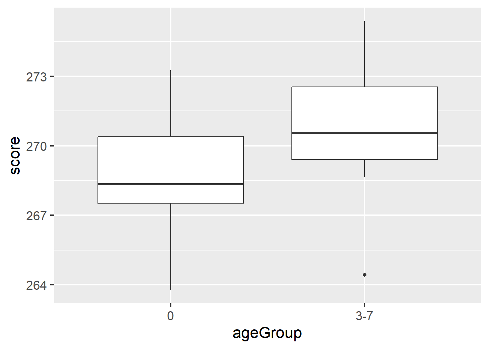
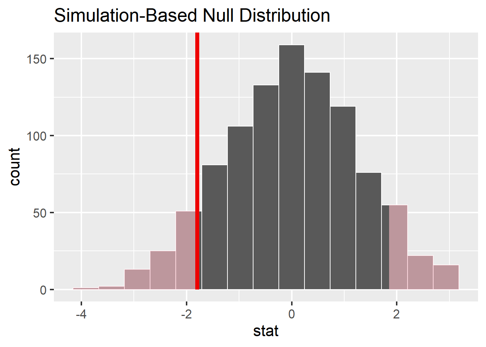
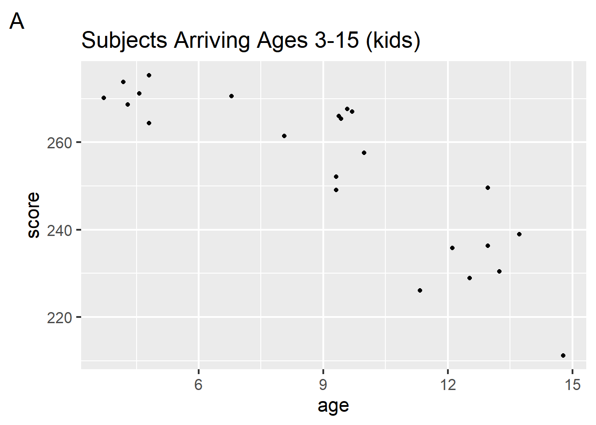
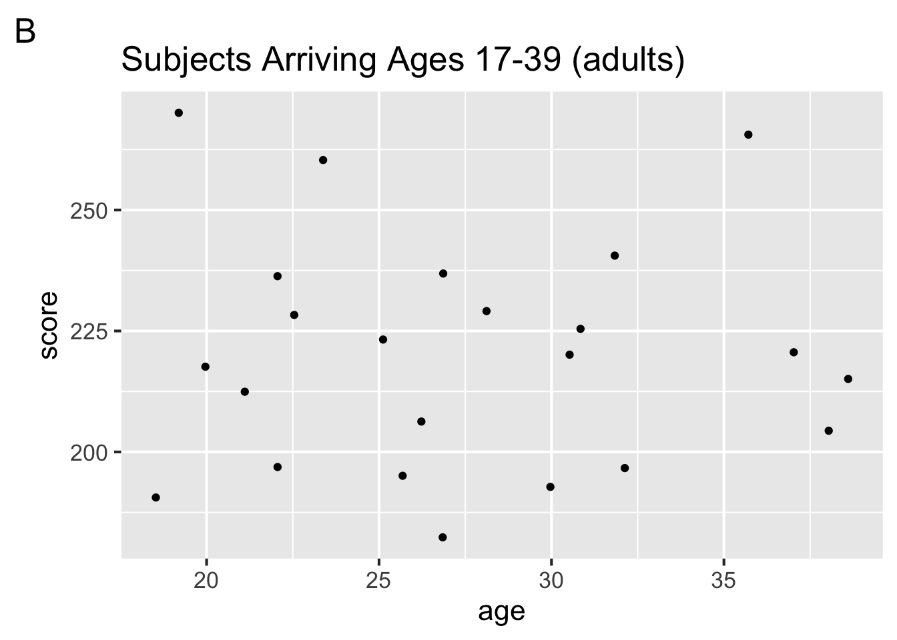
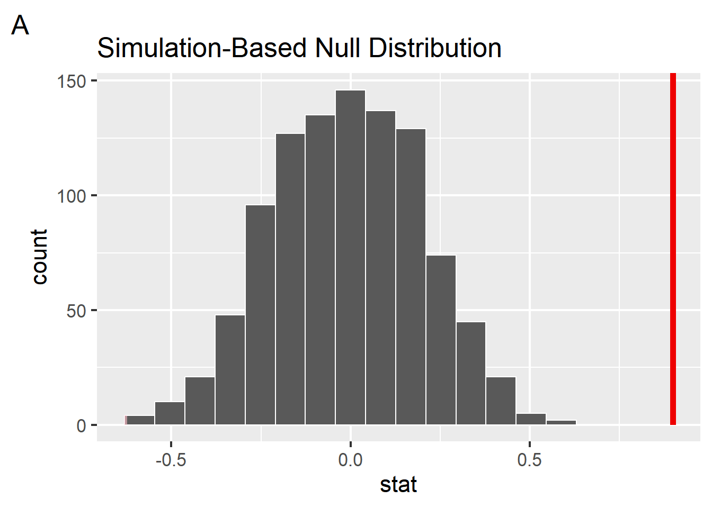
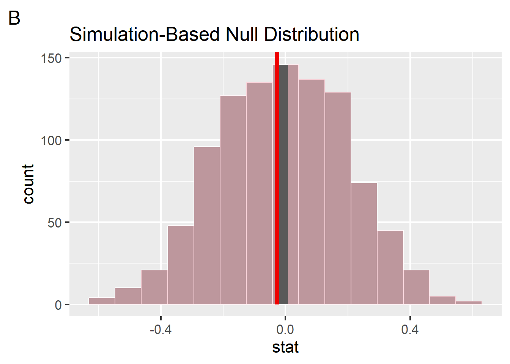
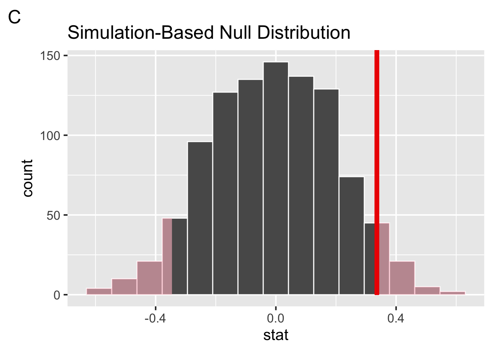
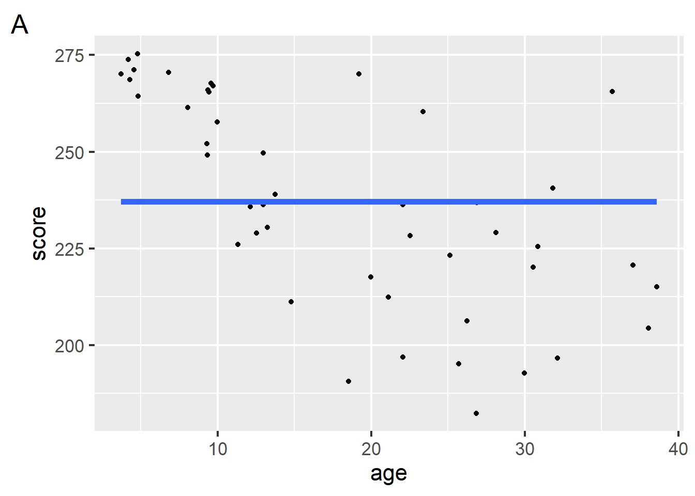

This quiz refers to data simulated from Johnson & Newport (1989), who studied the English language proficiency of 46 native Korean or Chinese speakers who arrived in the US between the ages of 3 and 39. The researchers were interested in the critical period for language acquisition and wanted to know whether the participants’ age of arrival to the United States played a role in their English language proficiency.
The simulated data are stored in the tibble johnson_newport_1989. Here is a glimpse() at the tibble for your reference:
Johnson and Newport (1989) reported the mean and standard deviation of participants’ scores on the English proficiency test, grouped by an ageGroup variable, which divides age into 5 groups. Below we computed these descriptive statistics on our simulated data. Then, we used infer to generate the sampling distribution for the 3-7 year old age group, visualize the distribution, and shade the confidence interval.
# A. compute descriptive statistics by group johnson_newport_1989 %>%group_by(ageGroup) %>%summarise(n =n(), mean =mean(score), sd =sd(score))
# B. generate the sampling distribution for 3-7 groupsamp_distribution <- johnson_newport_1989 %>%filter(ageGroup =="3-7") %>%specify(response = score) %>%generate(reps =1000, type ="bootstrap") %>%calculate(stat ="mean")
# C. get confidence interval ci <- samp_distribution %>%get_confidence_interval(______________)
# D. visualize sampling distribution and confidence interval samp_distribution %>%visualize() +shade_ci(endpoints = ci)

True or false, the descriptive statistics reported above are parametric.
The sampling distribution of the mean looks approximately Gaussian. The probability densitiy function for the Gaussian distribution is given by which of the following equations?
Fill in the blanks in the sentence below to describe what happens on each repeat in code B above, in which we constructed the sampling distribution.
Draw data points replacement, compute the
Which of the following could have been used to fill in the blank in code block C above? Choose all that apply.
2 Hypothesis testing
Johnson and Newport (1989) began with the following question:
“The primary question of this study involved examining the relationship between age of learning English as a second language and performance on the test of English grammar…The first comparison involved determining whether there was any difference between the age 3-7 group and the native group in their performance in English.” ~ p78
We replicated this below using our simulated data and the 3-step hypothesis testing framework we learned in lecture:
# A. visualize difference with a boxplotjohnson_newport_1989 %>%filter(ageGroup %in%c("0", "3-7")) %>%ggplot(aes(y = score, x = ageGroup)) +geom_boxplot()

# B. compute observed difference in meansdiff_means <- johnson_newport_1989 %>%filter(ageGroup %in%c("0", "3-7")) %>%specify(response = score, explanatory = ageGroup) %>%calculate(stat ="diff in means", order =c("0", "3-7"))
# C. construct the null distribution with infernull_distribution <- johnson_newport_1989 %>%filter(ageGroup %in%c("0", "3-7")) %>%specify(response = score, explanatory = ageGroup) %>%hypothesize( null ="independence") %>%generate(reps =1000, type ="permute") %>%calculate(stat ="diff in means", order =c("0", "3-7"))
# D. visualize the null and shade p-valuenull_distribution %>%visualize() +shade_p_value(obs_stat = diff_means, direction ="both" )

Step 1 is to pose the null hypothesis. True or false, the null hypothesis here is that the observed difference in means is due to nothing but chance.
Step 2 is to ask, if the null hypothesis is true, how likely is our observed pattern of results? We quantify this likelihood with:
Step 3 is to decide whether to reject the null hypothesis. Johnson and Newport concluded that the two groups were not significantly different from each other, suggesting that participants who arrived to the US by age 7 acheived native proficiency. This implies that they
Given our simulated null distribution, do you agree with their decision? Explain why based on the simulation.
Answer
"I agree with their decision. Under the null hypothesis, the observed difference in means is just under -2. Given the shaded p-value, we can see that observing this difference is fairly likely under the null hypothesis. So we should fail to reject the null hypothsis."
3 Correlation
Johnson and Newport (1989) also wanted to address the following question:
“An important question to answer is whether, throughout adulthood, performance continues to decline as a function of age of exposure or whether it plateaus at some point (H. Gleitman, personal communication). If the explanation for late learners’ poorer performance relates to maturation, performance should not continue to decline over age, for presumably there are not many important maturational differences between, for example, the brain of a 17-year old and the brain of a 27-year old…” ~ page 79
To address this question, they separated subjects into two groups: those who arrived as children, between the ages of 3-15 (figure A) and those who arrived as adults, between the ages of 17-39 (figure B). For each group, they computed the correlation between age of exposure and score on the English proficiency test.
Given the scatterplots of these data, which of the following could be their observed correlations for these groups?


True or false, the correlations computed on these data were subject to sampling variability.
Johnson and Newport used hypothesis testing to determine whether the correlation they observed for each group was significantly different from zero. Focusing on group B (arrived to US between 17-39) we computed a p-value of 0.942 on the correlation we observed in our simulated data. Which figure could represent this p-value visualized on a null distribution generated nonparametrically from 1000 repetitions?



What type of relationship would a correlation between age and score suggest?
4 Model specification
Two different models: A and B, represented by the blue and red lines.

Which of the following best describes model A (blue line)?
Suppose the model B (red line) is specified with the response variable (score) and one explanatory variable (age). Which of the following equations could be used to express the model? Choose all that apply.
\(y=ax+b\)
\(y = w_0 + w_1x_1\)
\(y = β_0 + β_1x_1 + β_2x_2 + \epsilon\)
\(y = Xβ + ε\)
Which of the following model terms are included in model A (blue line)?
Which of the following model terms are included in model B (red line)?